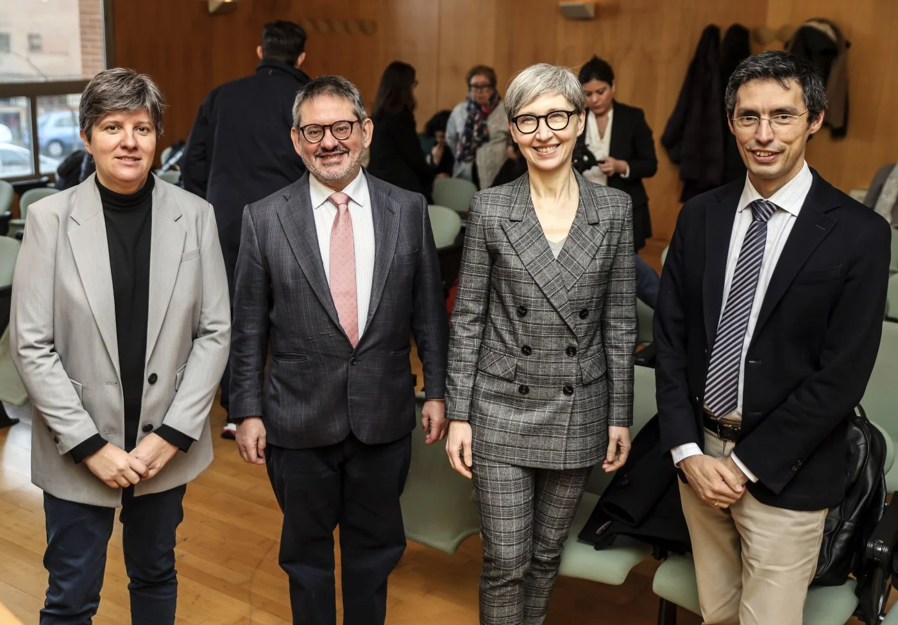

Una selección de momentos del equipo LexiMus en congresos, jornadas y eventos científicos. No es un repositorio completo de actividades, sino una muestra representativa.
Nota: Esta galeria recoge de forma selectiva algunas de las propuestas presentadas por el equipo LexiMus. Para una relación completa de actividades, consulta leximus.usal.es.

Jornadas científicas
I Jornadas LexiMus
15-16 de enero de 2024 · Universidad de La Rioja
Primera edición de las jornadas del proyecto, con presentaciones del equipo investigador y colaboradores externos. De izquierda a derecha: María Palacios, Álvaro Torrente, Teresa Cascudo y José Mª Domínguez.
Musicología: historias (inter)conectadas. Sociedad Española de Musicología. Panel monográfico del equipo LexiMus. De izquierda a derecha: Beatriz Hernández, Daniel Martín, Matilde Olarte, María Palacios, Marina González, Mª Jesús Pena y Marina Hervás.
Segunda edición de las jornadas del proyecto LexiMus, con presentaciones del equipo y nuevos avances de la investigación. De izquierda a derecha: Mª Jesús Pena, Marina Hervás, Matilde Olarte, Isabel Jiménez, María Palacios, Daniel Martín y Marta Rodrigo.
Conferencia sobre prensa histórica e IA organizadas por la Academia Austriaca de Ciencias. LexiMus Project: AI in the Analysis of Music Press. Daniel Martín e Isabel Jiménez